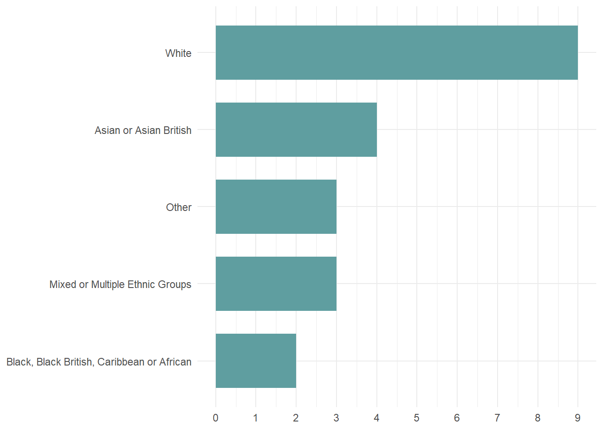
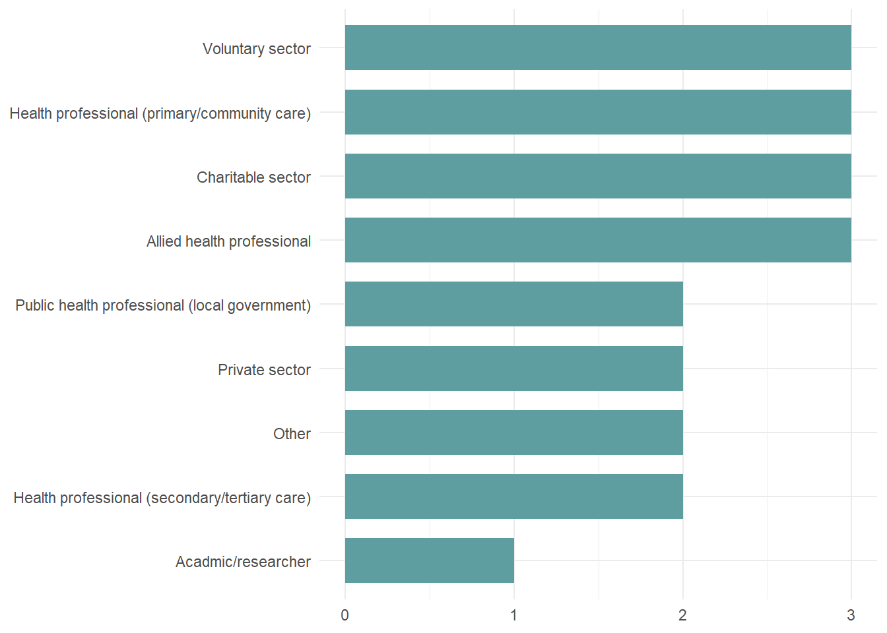
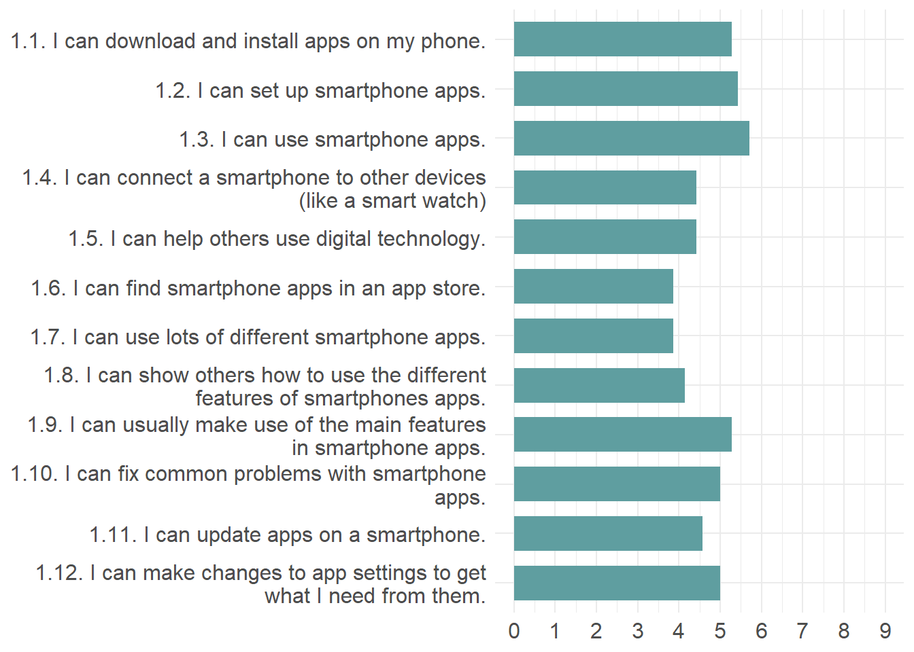
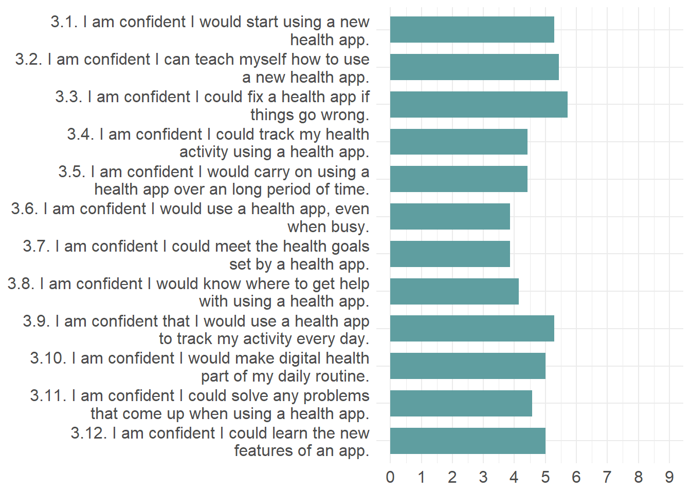
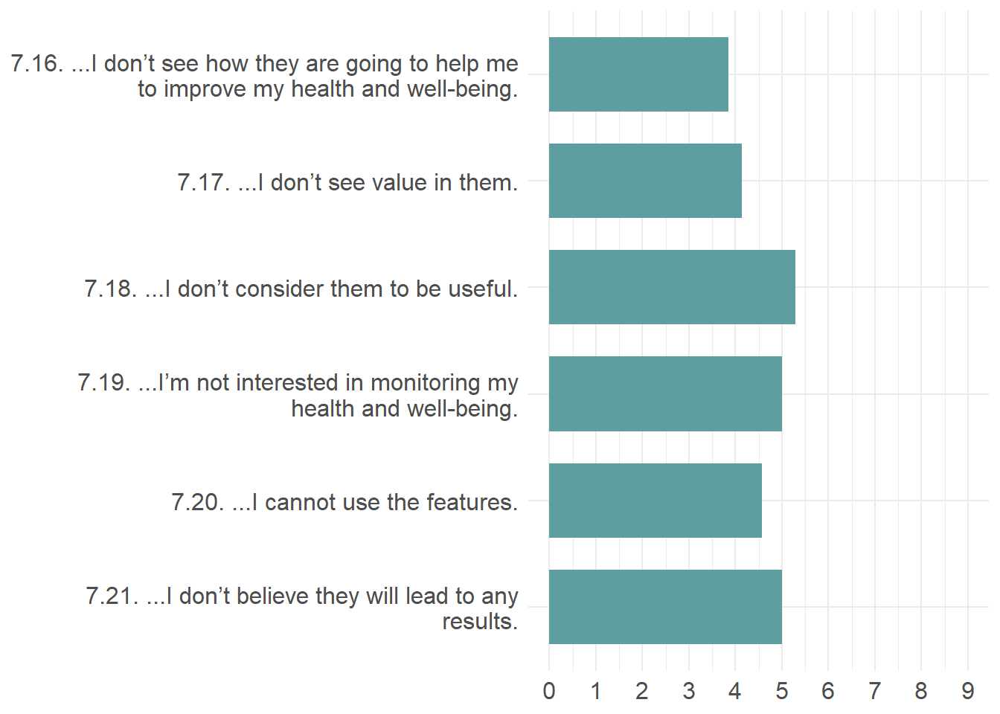

Delphi Round 1 - Interim Report [DUMMY]
Contents
1. Descriptive statistics
2. Non-response bias check
3. Consensus measurement
4. Qualitative analysis
5. Revisions for Round 2
6. Post-hoc comparisons
1. Descriptive statistics
Note
Purpose To provide an overview of the expert panel’s demographics and responses across key domains of digital health enablement.
Variables
- Gender
- Ethnicity
- Occupation/sector
- Years of experience
- Digital health enablement domains (e.g., digital competencies, digital health literacy).
Methods
- Calculate frequencies and percentages for categorical variables (e.g., gender, occupation).
- Compute mean and standard deviation for continuous variables (e.g., years of experience, item ratings).
- Provide the distribution of scores across the different digital health enablement sub-domains to summarise initial participant responses.
1.1. Demographic report
1.1.1. Gender
The gender distribution of participants was fairly balanced, with a slight majority identifying as female. Additionally, a small but significant portion of participants identified as non-binary or transgender, reflecting a diverse gender representation in the sample.
1.1.2. Ethnicity
The ethnic breakdown of participants revealed a diverse cohort, with the majority identifying as White British, followed by smaller proportions from Black, Asian, and other ethnic backgrounds. Notably, participants from minority ethnic groups accounted for nearly a third of the total sample, highlighting the varied demographic representation in the study.

1.1.3. Educational attainment
The educational attainment of participants showed a broad range, with the largest group holding an undergraduate degree, followed by those with postgraduate or professional qualifications. A notable proportion of participants had school-level or further education qualifications, while a smaller group reported having no formal qualifications.

1.1.4. Employment sector
The employment sector breakdown revealed a diverse range of occupations, with the majority of participants working in the public sector, particularly in education and healthcare. Smaller proportions were employed in the private sector, non-profit organizations, and vocational industries, while a minority reported being self-employed or not currently in paid employment.

2. Non-response bias check
Note
Purpose To assess if there are significant differences between early and late respondents, thereby checking for non-response bias. If the Mann-Whitney U test does not show significant differences, non-response bias is likely minimal.
Procedure
Divide respondents into early responders and late responders based on submission time. Perform the Mann-Whitney U test to compare these groups across key item ratings or total scores.
Variables
Total or individual item scores from various domains (e.g., digital competencies, digital health literacy).
3. Consensus measurement
Note
Purpose To assess the level of agreement among experts on the relevance of each item.
Methods
- Descriptive statistics: Report median and interquartile range (IQR) for each item on the 0-9 scale.
- Define a consensus threshold: Items with a median rating ≥ 7 and IQR ≤ 2 are considered to have reached consensus.
- Qualitative comments: Participants’ suggestions will be analysed (details below) to inform potential item revisions.
3.1. Mean item scores
3.1.1. Sub-construct 1: Digital Skills
The distribution of digital skills scores reveals critical insights into the varying levels of digital competency among participants. Notably, the higher scores in Items 01 and 05 indicate strong proficiency in basic digital tasks, while lower scores in Items 10 and 12 highlight areas where individuals struggle, suggesting a need for targeted training and support to bridge the digital divide.

Figure 5 Mean scores for items related to Digital Skills.
3.1.2 Sub-construct 2: Digital Health Literacy
The distribution of digital skills scores reveals critical insights into the varying levels of digital competency among participants. Notably, the higher scores in Items 01 and 05 indicate strong proficiency in basic digital tasks, while lower scores in Items 10 and 12 highlight areas where individuals struggle, suggesting a need for targeted training and support to bridge the digital divide.

Figure 6 Mean scores for items related to Digital Health Literacy.
3.1.3. Sub construct 3: Digital Self-Efficacy
The distribution of digital skills scores reveals critical insights into the varying levels of digital competency among participants. Notably, the higher scores in Items 01 and 05 indicate strong proficiency in basic digital tasks, while lower scores in Items 10 and 12 highlight areas where individuals struggle, suggesting a need for targeted training and support to bridge the digital divide.

Figure 7 Mean scores for items related to Digital Self-Efficacy.
3.1.4. Sub construct 4: Socio-Digital Norms
The distribution of digital skills scores reveals critical insights into the varying levels of digital competency among participants. Notably, the higher scores in Items 01 and 05 indicate strong proficiency in basic digital tasks, while lower scores in Items 10 and 12 highlight areas where individuals struggle, suggesting a need for targeted training and support to bridge the digital divide.

Figure 8 Mean scores for items related to Socio-Digital Norms.
3.1.5. Sub construct 5: Digital Outcome Expectancy
The distribution of digital skills scores reveals critical insights into the varying levels of digital competency among participants. Notably, the higher scores in Items 01 and 05 indicate strong proficiency in basic digital tasks, while lower scores in Items 10 and 12 highlight areas where individuals struggle, suggesting a need for targeted training and support to bridge the digital divide.

Figure 9 Mean scores for items related to Digital Outcome Expectancy.
3.1.6. Sub construct 6: Digital Trust
The distribution of digital skills scores reveals critical insights into the varying levels of digital competency among participants. Notably, the higher scores in Items 01 and 05 indicate strong proficiency in basic digital tasks, while lower scores in Items 10 and 12 highlight areas where individuals struggle, suggesting a need for targeted training and support to bridge the digital divide.

Figure 10 Mean scores for items related to Digital Trust.
3.1.7. Sub construct 7: Digital Behavioural Regulation
The distribution of digital skills scores reveals critical insights into the varying levels of digital competency among participants. Notably, the higher scores in Items 01 and 05 indicate strong proficiency in basic digital tasks, while lower scores in Items 10 and 12 highlight areas where individuals struggle, suggesting a need for targeted training and support to bridge the digital divide.
The reason I use health apps is…

Figure 11 Mean scores for items related to Digital Behavioural Regulation (autonomous).
The reason I use health apps is…

Figure 12 Mean scores for items related to Digital Behavioural Regulation (controlled).
The reason I do not use health apps is…

Figure 13 Mean scores for items related to Digital Behavioural Regulation (amotivation).
4. Qualitative analysis
4.1 Content analysis
Note
Purpose To systematically analyse the free-text comments for themes, suggestions, and critiques related to the items.
Steps
- Data familiarisation: Read all comments for each domain (e.g., digital competencies, digital health literacy).
- Initial coding: Develop a coding framework based on recurring themes such as wording suggestions, missing constructs, or relevance concerns. Example: If several participants suggest revising “I can download and install apps,” this might be coded as “wording suggestions.”
- Thematic analysis: Group codes into broader themes such as clarity of items, real-world applicability, or overlapping constructs. Highlight common patterns and concerns to guide item revision.
- Frequency analysis: Count occurrences of each theme to identify key areas for revision (e.g., frequent comments about simplifying certain items).
- Interpretation: Use themes to revise items for Round 2, ensuring the tool reflects expert input and clarity in measurement.
4.2 Syntax analysis
Note
Purpose To examine the structure and tone of the language used in participants’ feedback.
Steps
- Identify patterns in language use: Look for frequent words or phrases like “unclear,” “confusing,” or “easy to understand,” indicating the perceived quality of items. Analyse positive/negative valence: Are participants offering more critique or positive reinforcement? Linguistic markers: Evaluate the use of modal verbs (e.g., “could,” “might”) or qualifiers (e.g., “somewhat,” “possibly”) to gauge participants’ confidence or uncertainty. Examine directive language (e.g., “this must change”) for strong suggestions.
- Complexity and conciseness: Assess whether participants provide brief or detailed feedback. Longer feedback may indicate higher engagement or complexity in understanding the item.
- Discourse structure: Look at the structure of feedback (e.g., critiques followed by solutions) to assess the depth of thought. Combining Content and Syntax Analysis: Synthesising findings: Use content analysis to identify recurring themes and syntax analysis to determine how confidently these themes are expressed. Prioritise changes in areas where both the content and language suggest strong or frequent concerns.
5. Revisions for Round 2
Note
Purpose To refine the measurement tool based on Round 1 analysis.
Methods
- Retain items that reached consensus.
- Revise or remove items that did not reach consensus, based on both qualitative feedback and quantitative measures.
- Integrate suggestions from the content analysis to revise item wording or add new items where necessary.
6. Post-hoc comparisons
Note
Purpose To explore subgroup differences (e.g., academics vs. public health professionals) to determine if different groups hold varying views on item relevance.
Methods
- Use the Mann-Whitney U test (for two groups) or Kruskal-Wallis test (for multiple groups) to compare scores across different professional roles or experience levels.